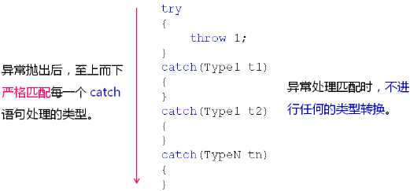

1，C++ 内置了异常处理的语法元素 try ... catch ...；
1，try 语句处理正常代码逻辑；
2，catch 语句处理异常情况；
3，try 语句中的异常由对应的 catch 语句处理；
1，代码示例：
1 try
2 {
3 double r = divide(1, 0); // divide() 函数里面产生除 0 异常，于是 divide() 函数就会将这个异常抛出到调用的地点，这个地点正好在 try 语句块中，其会将捕捉到的异常扔给下面的 catch 代码块，catch 代码块就可以将除 0 异常捕捉到，于是打印 Divided by zero ...；
4 }
5 catch(...)
6 {
7 cout << "Divided by zero ..." << endl;
8 }
2，C++ 通过 throw 语句抛出异常信息：
1，代码示例：
1 double divide(double a, double b)
2 {
3 const double delta = 0.000000001;
4 double ret = 0;
5
6 if( !((-delta < b) && (b < delta)) )
7 {
8 ret = a / b;
9 }
10 else
11 {
12 throw 0; // 0 这个字面值常量代表当前的异常元素，表示产生除 0 异常； 异常元素可以是一个值、一个对象、一个字符串等； 扔出异常元素后，divide() 就会立即返回到调用点；
13 }
14
15 return ret;
16 }2，C++ 中 throw 这个新的关键字就是用来仍出异常元素的，我们简称为“异常”，每一个异常都需要被 catch 语句来处理；
3，C++ 异常处理分析：
1，throw 抛出的异常必须被 catch 处理：
1，当前函数能够处理异常，程序往下执行；
2，当前函数无法处理异常，则函数停止执行，并返回；
1，返回是异常返回，和正常返回不一样；
2，异常产生后的函数返回是没有返回值的；
2，未被处理的异常会顺着函数调用栈向上传播，知道被处理为止，否则程序将停止执行；
3，C++ 异常处理初探编程实验：
1 #include <iostream>
2 #include <string>
3
4 using namespace std;
5
6 double divide(double a, double b)
7 {
8 const double delta = 0.000000000000001;
9 double ret = 0;
10
11 if( !((-delta < b) && (b < delta)) )
12 {
13 ret = a / b;
14 }
15 else
16 {
17 throw 0;
18 }
19
20 return ret;
21 }
22
23 int main(int argc, char *argv[])
24 {
25 try
26 {
27 double r = divide(1, 0); // 扔出异常后，divide() 自身没有 try...catch...，不能处理异常，所以 divide() 这个函数就会立即的停止并且带着异常元素返回到调用点，而 main() 函数中当也没有try...catch... 语句时，异常向上传播，main() 已经是第一个函数了，则导致整个程序异常停止，编译器显示：terminate called after throwing an instance of 'int'，已放弃；当 main() 中包含 try...catch... 语句时，程序正常打印：Divided by zero...；
28
29 cout << "r = " << r << endl;
30 }
31 catch(...) // “...” 表示见下分析；
32 {
33 cout << "Divided by zero..." << endl;
34 }
35
36 return 0;
37 }
4，同一个 try 语句可以跟上多个 catch 语句：
1，catch 语句可以定义具体处理的异常类型；
2，不同类型的异常由不同的 catch 语句负责处理；
3，try 语句中可以抛出任何类型的异常；
1，try 语句块用于放置可能产生异常的代码，工程里面一般都习惯将正常功能逻辑代码放在 try 语句块中，然后后面跟上多个 catch 语句；
2，可以是一个 int、字符串、对象；
4，catch(...) 用于处理所有类型的异常；
1，一般情况作为最后出场的语句块；
5，任何异常都只能被捕获（catch）一次；
1，只要被 catch 一次，其它的 catch 就没有捕获机会了；
5，异常处理的匹配规则：
1，示意图：

2，try 语句块中直接通过 throw 扔出整型异常；
3，扔出后发现是在 catch 语句块中，然后这个异常就会进行 catch 语句块的匹配；
4，从上向下严格匹配每个 catch 它所需要捕获的异常类型；
5，匹配 catch 语句块所标识的类型时，是不会进行任何的类型转换的；
6，如果说不能够严格匹配上，那么当前的异常没有被捕获，当前的函数就会立即的停止执行，并且带着这个异常沿着函数调用栈顺序的返回；
6，异常类型匹配编程实验：
1 #include <iostream>
2 #include <string>
3
4 using namespace std;
5
6 void Demo1()
7 {
8 try
9 {
10 throw 'c';
11 }
12 catch(char c)
13 {
14 cout << "catch(char c)" << endl;
15 }
16 catch(short c)
17 {
18 cout << "catch(short c)" << endl;
19 }
20 catch(double c)
21 {
22 cout << "catch(double c)" << endl;
23 }
24 catch(...) // 当把它放到其它 catch 语句块前面的时候，编译器显示：error: '...' handler must be the last handler for its try block；
25 {
26 cout << "catch(...)" << endl;
27 }
28 }
29
30 void Demo2()
31 {
32 throw "D.T.Software; // 两个分开执行的；
33 throw string("D.T.Software");
34 }
35
36 int main(int argc, char *argv[])
37 {
38 Demo1();
39
40 try
41 {
42 Demo2(); // 认为它可能产生字符串异常，所以将它放到了这里；
43 }
44 catch(char* s)
45 {
46 cout << "catch(char *s)" << endl;
47 }
48 catch(const char* cs) // 没有这个 catch 语句块时，第一个异常执行后编译器显示：terminate called after throwing an instance of 'char const *'；
49 {
50 cout << "catch(const char *cs)" << endl;
51 }
52 catch(string ss)
53 {
54 cout << "catch(string ss)" << endl;
55 }
56
57 return 0;
58 }
7，小结：
1，C++ 中直接支持异常处理的概念；
2，try ... catch ... 是 C++ 中异常处理的专用语句；
3，try 语句处理正常代码逻辑，catch 语句处理异常情况；
4，同一个 try 语句可以跟上多个 catch 语句；
5，异常处理必须严格匹配，不进行任何的类型转换；